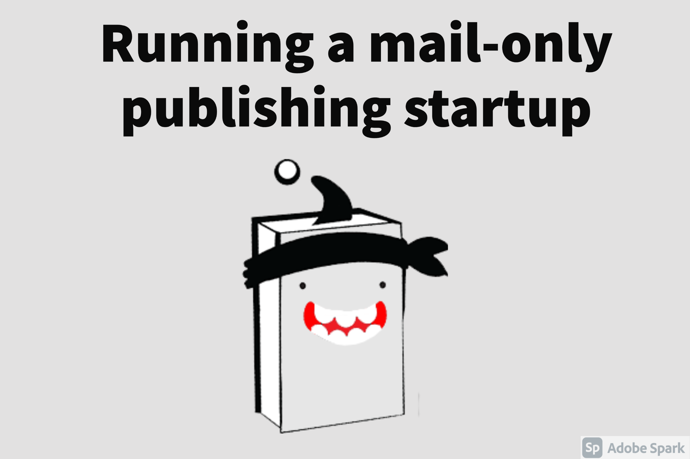

Running a mail-only publishing startup


My name is Papa Makhtar DIOP more than ten years into the entrepreneurship ecosystem after a brief and quite successful career in the banking industry that led me to be part of those who early saw the opportunity of fintech with online banking and the democratization of algorithmic trading. After 3 years falling to export this fintech startup out of Africa, I ended with a strong base of highly profitable smart algorithmic market-making systems that could operate year to year without losing money on a single day of trading, I just stopped this startup because once this was done the next step was to come up with brilliant startups ideas that could change for the better the world and could take the money that this algorithmic market-making system will make and grow because I believe in Finance that has a real impact on the real economy, not one that only grows numbers.
Strong of several ideas still valuable executable, I decided to put them on the shelf and work on things that interest nobody because I learnt from books of great entrepreneur that it was the best way to start. Focusing on what's not interesting. Publishing was what I thought was not interesting anybody in the tech startup space since amazon led the industry. But as a book lover and learner, I thought there was still an opportunity of expanding the publishing market and making people care more about books, blogs and the new medium and memes of publishing that I was trying to invent.
Running a publishing startup especially a mail only publishing startup probably print-only for the book is the topic of this publication where it will be about the things I am doing with this publishing startup experiment named Book Dojo and the lessons I will learn. So this publication is a CEO BLOG and will be about me and my vision with Book Dojo.
You can get involved in this publishing startup here
I am also in the process of writing a book that one could think is only about Gamestop and the short squeeze that the stock of this company experienced but is in fact a container of deep knowledge about today's financial market systems, regulations, and automation with the technology that plays a cutting edge role that gets relayed large bank you probably know from managing financial assets to being the only brands with administrative employees.
you can be notified when published here